Section 2, Module 1: Math
1)
Line t in the xy-plane has a slope of − and passes through the point (9,10). Which equation defines line t?
A
B
C
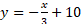
D
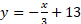
2)
The function models the value, in dollars, of a certain bank account by the end of each year from 1957 through 1972, where x is the number of years after 1957. Which of the following is the best interpretation of " is approximately equal to 243" in this context?
A
The value of the bank account is estimated to be approximately 5 dollars greater in 1962 than in 1957.
B
The value of the bank account is estimated to be approximately 243 dollars in 1962.
C
The value, in dollars, of the bank account is estimated to be approximately 5 times greater in 1962 than in 1957.
D
The value of the bank account is estimated to increase by approximately 243 dollars every 5 years between 1957 and 1972.
3)
For a certain rectangular region, the ratio of its length to its width is 35 to
10. If the width of the rectangular region increases by 7 units, how must the
length change to maintain this ratio?
A
It must decrease by 24.5 units.
B
It must increase by 24.5 units.
C
It must decrease by 7 units.
D
It must increase by 7 units.
4)
Square P has a side length of inches. Square Q has a perimeter that is 176 inches
greater than the perimeter of square P. The function gives the area of square Q, in square inches. Which of
the following defines ?
A
B
C
D
5)
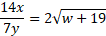
The given equation relates the distinct positive real numbers , , and . Which equation correctly expresses in terms of and ?
A 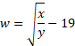
B 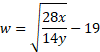
C
D
6)
Point O is the center of a circle. The measure of arc RS on
this circle is 100°. What is the measure, in degrees, of its associated
angle ROS?
7)
"The expression is equivalent to , where and are positive constants and .
What is the value of ?"
8)
A right triangle has sides of length 2√2, 6√2, and √80 units. What is the area of the triangle, in square units?
A
8√2 + √80
B
12
C
24√80
D
24
9)
The expression , where is a constant, can be rewritten as , where , , and are integer constants. Which of the following must be an integer?
A
B
C
D
10)
In the given system of equations, is a constant. The graphs of the equations in the given system intersect at exactly one point, , in the -plane. What is the value of ?
A
B
C
D
11)
An isosceles right triangle has a hypotenuse of length 58 inches. What is the
perimeter, in inches, of this triangle?
A
29√2
B
58√2
C
58 + 58√2
D
58 + 116√2
12)
In the xy-plane, a parabola has vertex (9, -14) and intersects the x-axis at
two points. If the equation of the parabola is written in the form y = ax² + bx
+ c, where a, b, and c are constants, which of the following could be the value
of a + b + c?
A
-23
B
-19
C
-14
D
-12
13)
Function f is defined by f(x) = -aˣ + b, where a and b are constants. In
the xy-plane, the graph of y = f(x) - 15 has a y-intercept at (0, -99/7). The
product of a and b is 65/7. What is the value of a?
14)
The line graph shows the estimated number of chipmunks in a state park on April
1 of each year from 1989 to 1999.
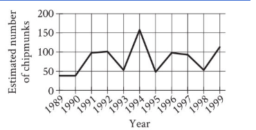
Based on the line graph, in which year was the estimated number of chipmunks in the state park the greatest?
A
1989
B
1994
C
1995
D
1998
15)
A fish swam a distance of 5,104 yards. How far did the fish swim, in miles?
(1 mile = 1,760 yards)
A
0.3
B
2.9
C
3,344
D
6,864
16)
Which expression is equivalent to 12x³ − 5x³?
A
7x⁶
B
17x³
C
7x³
D
17x⁶
17)
x + y = 18
5y = x
What is the solution (x, y) to the given system of equations?
A
(15, 3)
B
(16, 2)
C
(17, 1)
D
(18, 0)
18)
The point (8, 2) in the xy-plane is a solution to which of the following
systems of inequalities?
A
x > 0 y > 0
B
x > 0 y < 0
C
x < 0 y > 0
D
x < 0 y < 0
19)
|x − 5| = 10
What is one possible solution to the given equation?
20)
f(x) = 7x + 1
The function gives the total number of people on a company retreat with managers. What is the total number of people on a company retreat with 7 managers?
21)
h(x) = x² − 3
Which table gives three values of x and their corresponding values of h(x) for the given function h?
A
x: 1, 2, 3
h(x): 4, 5, 6
B
x: 1, 2, 3
h(x): -2, 1, 6
C
x: 1, 2, 3
h(x): -1, 1, 3
D
x: 1, 2, 3
h(x): -2, 1, 3
22)
A
0
B
1
C
27
D
270
Section 2, Module 2: Math
1)
To estimate the proportion of a population that has a certain characteristic, a
random sample was selected from the population. Based on the sample, it is
estimated that the proportion of the population that has the characteristic is
0.49, with an associated margin of error of 0.04. Based on this estimate and
margin of error, which of the following is the most appropriate conclusion
about the proportion of the population that has the characteristic?
A
It is plausible that the proportion is between 0.45 and 0.53.
B
It is plausible that the proportion is less than 0.45.
C
The proportion is exactly 0.49.
D
It is plausible that the proportion is greater than 0.53.
2)
A moving truck can tow a trailer if the combined weight of the trailer and the
boxes it contains is no more than 4,600 pounds. What is the maximum number of
boxes this truck can tow in a trailer with a weight of 500 pounds if each box
weighs 120 pounds?
A
34
B
35
C
38
D
39
3)
−4x² − 7x = −36
What is the positive solution to the given equation?
A
B
C
4
D
7
4)
The table summarizes the distribution of color and shape for 100 tiles of equal area.
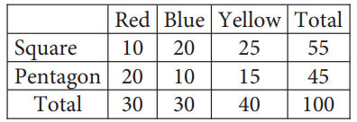
If one of these tiles is selected at random, what is the probability of selecting a red tile? (Express your answer as a decimal or fraction, not as a percent.)
5)
f(x) = 2x + 3
For the given function f, the graph of y = f(x) in the xy-plane is parallel to line j. What is the slope of line j?
6)
A proposal for a new library was included on an election ballot. A radio show
stated that 3 times as many people voted in favor of the proposal as people who
voted against it. A social media post reported that 15,000 more people voted in
favor of the proposal than voted against it. Based on these data, how many
people voted against the proposal?
A
7,500
B
15,000
C
22,500
D
45,000
7) 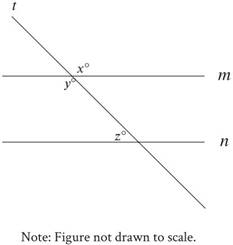
In the figure, lines m and n are parallel. If x = 6k + 13 and y = 8k − 29, what is the value of z?
A
3
B
21
C
41
D
139
8)
−3x + 21px = 84
In the given equation, p is a constant. The equation has no solution. What is the value of p?
A
0
B
C
D
4
9)
f(x) = (x − 10)(x + 13)
The function f is defined by the given equation. For what value of x does f(x) reach its minimum?
A
-130
B
-13
C 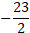
D 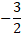
10)
The function 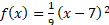
A
The metal ball's minimum height was 3 inches above the ground.
B
The metal ball's minimum height was 7 inches above the ground.
C
The metal ball's height was 3 inches above the ground when it started moving.
D
The metal ball's height was 7 inches above the ground when it started moving.
11)
In triangle JKL, and angle J is a right angle. What is the value of ?
12)
−x2+bx−676=0
In triangle JKL, and angle J is a right angle. What is the value of ?
13) 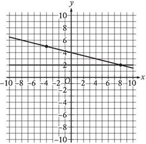
If a new graph of three linear equations is created using the system of equations shown and the equation , how many solutions will the resulting system of three equations have?
A
Zero
B
Exactly one
C
Exactly two
D
Infinitely many
14)
The function f gives the value, in dollars, of a certain piece of equipment after x months of use. If the value of the equipment decreases each year by p% of its value the preceding year, what is the value of p?
A
4
B
5
C
36
D
64
15) 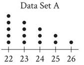
The dot plot represents the 15 values in data set A. Data set B is created by adding 56 to each of the values in data set A. Which of the following correctly compares the medians and the ranges of data sets A and B?
A
The median of data set B is equal to the median of data set A, and the range of data set B is equal to the range of data set A.
B
The median of data set B is equal to the median of data set A, and the range of data set B is greater than the range of data set A.
C
The median of data set B is greater than the median of data set A, and the range of data set B is equal to the range of data set A.
D
The median of data set B is greater than the median of data set A, and the range of data set B is greater than the range of data set A.
16)
The equation represents circle A. Circle B is obtained by shifting
circle A down 2 units in the xy-plane. Which of the following equations
represents circle B?
A
B
C
D
17) 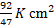
Two identical rectangular prisms each have a height of 90 centimeters (cm). The
base of each prism is a square, and the surface area of each prism is . If the prisms are glued together along a square
base, the resulting prism has a surface area of
A
4
B
8
C
9
D
16
18)
210 is p% greater than 30. What is the value of p?
19)
Triangles ABC and DEF are congrument,
where A corresponds to D, and B and E are
right angles. The measure of angle A is 62°. What is the
measure of angle F?
A
28°
B
62°
C
90°
D
118°
20)
The scatterplot shows the relationship between body weight and brain weight for
9 species of animal.
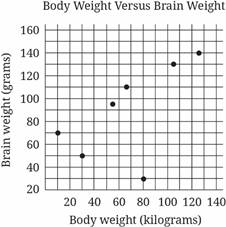
Based on the scatterplot, what is the brain weight, in grams, of the species
that has the greatest body weight?
A
70
B
90
C
125
D
140
21)
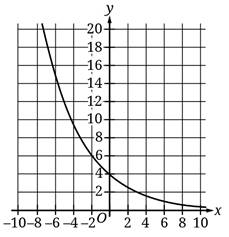
/> What is the y-intercept of the graph shown?
A
(0, 4)
B
(0, 12)
C
(4, 0)
D
(12, 4)
22)
If 9x = 54, what is the value of 12x?
A
45
B
57
C
72
D
162